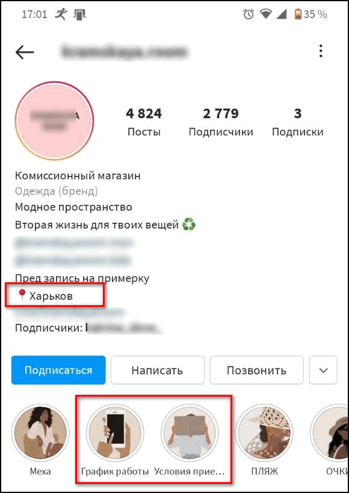
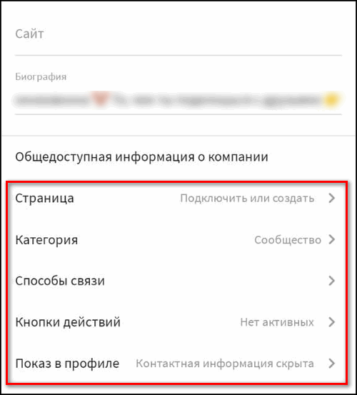

Ошибки при продвижении магазина в Инстаграме: 5 главных

Распространенная ошибка владельцев магазинов в Инстаграме* – не указывать цену, сообщать подробности только в Директе и не отвечать на комментарии клиентов. Это создает эффект «нерабочего магазина», в который редко обращаются за покупками.
Частые ошибки владельцев магазинов в Инстаграме*
При продвижении есть несколько постоянных ошибок, которые допускают владельцы. Из-за этого потенциальные клиенты не обращают внимания на страницу, обладатель теряет доход. ТОП-5 проблем с Инстаграм*-магазинами:
- «за ценами в Директ». Этот способ не работает лишь потому, что он направлен на продвижение публикации. Владелец страницы считает, что таким способом он сможет получить больше откликов и продвинуть запись в ТОП;
- не отвечать на комментарии, сообщения. Проверять «Новые заявки» и отзывы – необходимость;
- отсутствие дополнительных контактных данных;
- неправильно подобранный тип магазина;
- низкое качество контента: текст, фотографии, биография.

Нередко эти недостатки объединены и автор не может получить дохода. Это касается и небольших хэнд-мейд площадок, так и нишевых магазинов.Цена и комментарии
Как и в другом магазине: при посещении клиент хочет видеть цену, чтобы рассчитать свой бюджет и присмотреть другие варианты. Это не значит, что узнав окончательную цену половина потенциальных покупателей больше не вернутся: наличие выбора привлекает посетителей, делая страницу интереснее и часто просматриваемой.
Почему владельцы Инстаграм*-магазинов не добавляют цену:
- возможность скорректировать тариф. Указывая в описании, придется редактировать публикацию при уменьшении цены. К тому же, «разный подход к клиентам» нередко становится второй причиной;
- «накрутка» комментариев. Однотипными отзывами «Цена?» посетители добавляют активности в профиль;
- конкуренты не знают прайс.
Но у этого способа есть недостаток: не каждый клиент желает засорять личные сообщения, чтобы получить ответ от менеджера. Такой вопрос могут задать ради любопытства, в сравнение с другими. И конкурентам, чтобы узнать ценообразование, достаточно создать еще один аккаунт и обратиться в Директ. Как указывать цену:
- в описании;
- сделать карусель и вставить вторым фото.
В описании к снимку вписывают основные характеристики товара, которые касаются его внешнего вида (если есть разные виды), комплектации и состава (в пищевой продукции, косметические средства).
Обратная связь: заполняем описание
С помощью раздела: «Биография» можно указать способы связи с продавцом.
В отличие от контактной информации, там указывают такие данные:
- пункты выдачи (если есть) или где расположен магазин. Для этого предложен отдельный пункт «Адрес»;
- график работы: когда клиенту сможет ответить консультант, если нужно уточнить какие-либо моменты;
- тематика магазина. Краткое описание для указания узкой тематики.
Описание страницы дополняет «Актуальное», где можно вставить отзывы, добавить текущую информацию о наличии товара. Как сделать описание страницы, чтобы обращались подписчики:
- Зайти в Инстаграм* – нажать «Редактировать профиль».
- В графе «Биография»: название магазина, график.

- Адрес: добавить физическое местоположение магазина.
- Добавить ссылку на сайте, если есть.
Чтобы текст уместился в описание, нужно использовать сокращения или просто перечислить в виде: часы работы и дни.
Актуальное: прайс, отзывы
Чтобы рассказать о тарифах, поделиться информацией об изменениях – нужно использовать вкладку: «Актуальное». С помощью Историй пользователь может рассказать о новом товаре или поделиться отзывами покупателей.
Если на странице есть видео/фото отзывы – такая страница больше вызывает доверия. Желательно, чтобы на таких публикациях была ссылка, которая перенаправляет на страницу клиенту.
Как правильно заполнить раздел «Актуальное» для магазина:
- выбрать единый стиль. Использовать одинаковое оформление для всех пунктов закрепленных публикаций;
- добавить отзывы. После покупок нужно просить клиентов оставить отзыв, отметив на нем магазин;
- прайс и праздничные акции. Если произошли какие-то изменения – клиенты должны быть уведомлены;
- повседневность или познавательные публикации.
Ежедневной рубрикой может стать приветствие от владельца. К примеру, пожелания с добрым утром, мини-игры или процесс создания товара.
Качество фото и контент в Инстаграме*
Владельцу такой страницы нужно в первую очередь наполнить страницу качественными снимками, текстом. Есть два варианта, как оформлять профиль в Инстаграме*:
- обратиться к профессионалам. Нанять фотографа, редактора и SMM-специалиста для создания первых публикаций, подбора контент-плана;
- создать самостоятельно. Но проверять качество текстов, снимков.
Помимо обычных фото и «карусели», автору профиля пригодятся:
- видео в Reels. Для охвата большего количества аудитории;
- постоянные Истории, которые включают и оформленные посты;
- праздничные публикации;
- короткие видеозаписи;
- навигация по странице.
При качественном наполнении профиля владельцу пригодится функция «Путеводитель». Она предназначена для создания подборок контента. Можно сделать пост в Истории, указав что создан путеводитель.
Для продвижения актуальны маски в Stories. Но напрямую указывать ссылки нельзя: только названия брендов, без логотипа.
Контактная связь
Последний пункт, который должен присутствовать в Инстаграм*-магазине – способы связи и альтернативы. К примеру, если у продавца есть только WhatsApp, то это сужает список потенциальных покупателей. 3 способа, как указывать контактные данные:
- воспользоваться сервисами-анкетами. Mssg.me, Taplink и другие, которые поддерживают создание микро-лендингов;
- добавить в описании номер телефона и адрес электронной почты. Но лучше использовать отдельные, которыми автор пользуется только как рабочими;
- указывать свой никнейм, ID в мессенджерах, чтобы покупатели смогли туда написать. Пишут под каждой публикацией в описании.
Сервисы мультиссылок удобны тем, что все контактные данные находится в одном месте. К тому же, владелец страницы сможет отслеживать активность по количеству кликов. Ссылку на сервис обычно оставляют в пункте «Адрес сайта», по которому пользователи смогут перейти. Недостаток такого способа в том, что большинство сервисов платные.
Указывая свой номер телефона, нужно пригодиться к тому, что будут поступать звонки в любое время суток. Вне зависимости от указанного графика, есть вероятность что обиженный клиент позвонит поздно ночью или ранним утром. Поэтому, лучше использовать дополнительный адрес электронной почты и регулярно проверять его.
Тип аккаунта в Инстаграме* для магазина
В социальной сети есть специальная категория профилей, которая предназначена для отслеживания статистики, добавления партнеров и работы с адресами – «Бизнес». Она подходит практически для всех форм частного бизнеса, исключая только нишевые площадки. В каких ситуация можно использовать закрытый тип профиля для магазина:
- эксклюзивные товары. Например, сумки из крокодиловой кожи, куртки;
- если чек за покупку достигает в среднем 50 000. Профессиональная косметика, парикмахерские принадлежности;
- магазин для узкоспециализированных товаров. Продажа медицинских халатов, форма пожарных.
В остальных же случаях скрывать цену, страницу и описание не стоит. Скрытый тип профиля влияет на продвижение, а это значит что товары не увидят потенциальные клиенты.